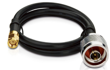

Home / Detection Electronics / Outdoor 1090
Field attach · Outdoor antenna
Outdoor 1090 MHz Receive Antenna (N-Female)
$329 ships from us after payment
- Mast-mount 1090 receive antenna, N-female, 9 dBi, about 57 inches
- SMA-male to N-male jumper — the radio is SMA female
- No Pi, no radio, no weather box, no 978
Sold by Dark Sky Systems LLC. Card via Stripe.